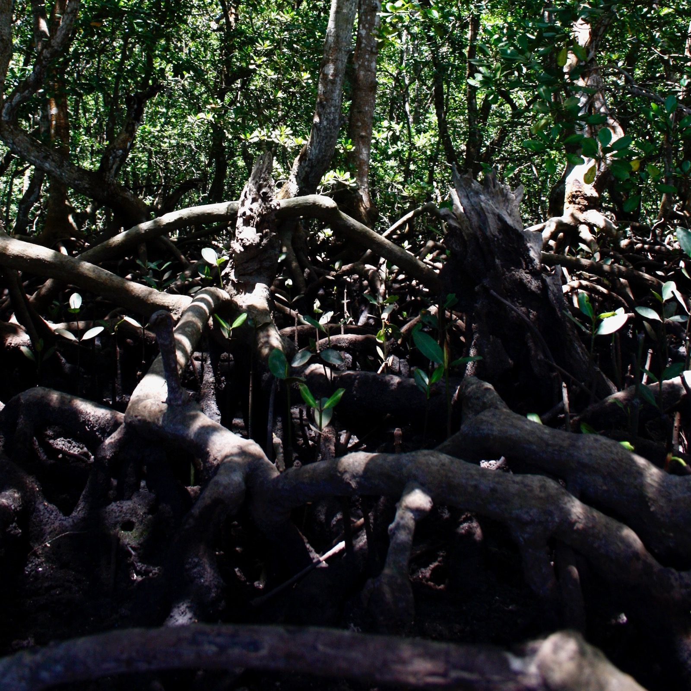

Oui la note 2, quel autre titre lui donner ? Celle de sa date ? Voyons voir. Dernière modification : 05h42. Et de me souvenir une fois de plus. Ce n'était donc pas hier soir mais ce matin. Un réveil très matinal, trop matinal. L'enfant qui chouine et appel son père en dessous de mon plancher. Toilettes, boules quies. Repartir dans ma nuit. Mais les premières pensées arrivent et m'envahissent. Vite, les noter, m'en débarrasser sans pour autant les perdre pour pouvoir reprendre mon repos, bien plus important à ce stade.
Frénésie
En quelques mots ?
Fatigue
Épuisée mais exaltée
Cerveau toujours en mouvement
Cacophonie
Capter la première pensée au réveil
Celle qui déterminera toutes les autres
Donne-t-elle nécessairement le pouls de la journée ?
Et puis soudain c'est mon cartel qui m'apparaît à la faveur d'un rêve en pleine nuit. Je connais déjà comment ça se passe ici, je sais qu'il en faudra un.
Prends ton cocktail de jus de cerveau et monte à bord
Bienvenue en frénésie on part pour un voyage le long des racines tentaculaires de ma pensée. Forêt tropicale ou mangrove... ça commence un peu ici aussi. Et là.